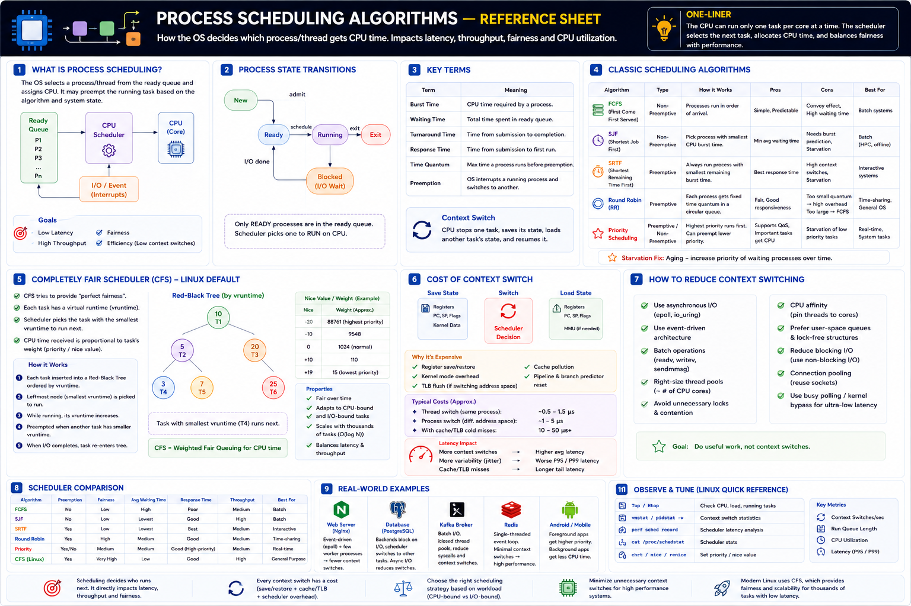

FCFS • SJF • Round Robin • Priority • CFS • vruntime • Red-Black Tree
Core Idea
A CPU core can execute only one thread at a time. With thousands of runnable threads competing for a few cores, the OS Scheduler must constantly answer: "Which process runs next?" That decision directly impacts latency, throughput, fairness, and efficiency.
Low Latency
Fast response for users
High Throughput
More work per second
Fairness
Every process gets CPU
Efficiency
Minimize context switches
Process State Lifecycle
Only READY processes sit in the ready queue. The scheduler picks one to run. BLOCKED processes are waiting for I/O or events — not competing for CPU.
Key Scheduling Terms
| Term | Meaning |
|---|---|
| Burst Time | CPU time a process actually needs |
| Waiting Time | Total time spent waiting in ready queue |
| Turnaround Time | Wall-clock time from submit to completion |
| Response Time | Time until process first gets CPU |
| Time Quantum | Max time a process runs before preemption |
| Preemption | OS interrupts a running process and switches |
| Starvation | Low-priority process never gets CPU |
| Aging | Gradually raise priority of waiting processes |
Classic Scheduling Algorithms — Evolution
1. FCFS — First Come First Served
Used in: simple batch systems only
2. SJF — Shortest Job First
Used in: batch HPC; impractical for general OS
3. Round Robin (RR)
Used in: time-sharing systems; conceptual basis for CFS
4. Priority Scheduling
Fix starvation with Aging — gradually raise waiting process priority
Completely Fair Scheduler (CFS) — Linux Default
CFS doesn't use fixed time slices. Instead, it tracks how much CPU time each process has consumed and always runs the process that has received the least CPU time so far. This gives every task its fair share while maintaining low latency.
How CFS Works — vruntime
Nice Value → Weight → CPU Share
| Nice | Weight | Relative Priority |
|---|---|---|
| -20 | 88761 | Highest priority |
| -10 | 9548 | High |
| 0 | 1024 | Normal (default) |
| +10 | 110 | Low |
| +19 | 15 | Lowest priority |
Internal Data Structure — Red-Black Tree
CFS Properties
CFS is used by Linux, Android, Chrome OS, and all major cloud providers. Kubernetes CPU shares and quotas are implemented on top of CFS.
Scheduling Algorithm Comparison
| Algorithm | Preemptive? | Fairness | Latency | Throughput | Weakness | Best For |
|---|---|---|---|---|---|---|
| FCFS | No | Low | Poor | Medium | Convoy effect | Simple batch |
| SJF | No | Low | Excellent (short) | High | Starvation; needs burst prediction | Batch HPC |
| SRTF | Yes | Low | Best | Medium | High switches; starvation | Interactive |
| Round Robin | Yes | High | Good | Medium | Quantum tuning critical | Time-sharing |
| Priority | Both | Medium | Good (high pri) | Medium | Starvation | Real-time, kernel |
| CFS (Linux) | Yes | Excellent | Excellent | High | Overhead with 1000s of tasks | General purpose |
Real-World Scheduling Choices
| System | Strategy |
|---|---|
| Nginx | Event-driven + epoll. Fewer runnable threads = fewer scheduling decisions. |
| PostgreSQL | Async I/O + shared buffers. Backends block less = less scheduler churn. |
| Kafka | Batch I/O + closed thread pool. Reduces scheduler switches. |
| Redis | Single-threaded event loop. Minimal scheduler involvement. |
| Android | CFS with weight boost for foreground app. Background gets less CPU. |
| Kubernetes | CPU requests = CFS shares. CPU limits = CFS quota + period. |
| Trading | SCHED_FIFO + CPU affinity + DPDK. Bypass scheduler entirely. |
Observe & Tune
| Tool | What it shows |
|---|---|
top / htop | CPU, load, run queue length |
vmstat / pidstat -w | Context switch stats per process |
perf sched record | Full scheduler latency trace |
cat /proc/schedstat | Per-CPU scheduler statistics |
chrt / nice / renice | Set priority and scheduling policy |
Production Failure Scenarios
High CPU, low throughput
Too many runnable threads — scheduler thrashing. Fix: reduce thread count, adopt event-driven architecture.
Poor responsiveness
CPU-bound batch jobs dominate scheduling. Fix: lower their nice value or split into separate cgroups.
Low-priority service starved
High-priority processes monopolize CPU. Fix: use aging, or rebalance priorities with nice / CFS weights.
High tail latency from migrations
Threads migrate across CPU cores, evicting caches. Fix: CPU affinity (taskset / pthread_setaffinity_np).
Staff Engineer Decision Framework
| Scenario | Approach |
|---|---|
| General Linux server | CFS (default) — don't change it |
| Interactive / low latency | Lower sched_latency_ns |
| CPU-bound batch jobs | Higher nice value + larger granularity |
| Hard real-time | SCHED_FIFO / SCHED_RR |
| 1000s of connections | epoll + event-driven arch |
| Kubernetes CPU control | CPU shares + quota + period |
Engineer Progression
Junior
"Which scheduling algorithm is fastest?"
Senior
"Why is CPU utilization high? Are threads oversubscribed?"
Staff
Is scheduling latency affecting P99? Can async I/O reduce scheduler load? CPU affinity? Separate CPU vs I/O pools?
Principal
Design architectures that minimize scheduler involvement. Kubernetes CPU quotas, DPDK polling, io_uring for near-zero scheduling overhead.
Interview Cheat Sheet
Principal Engineer Takeaway
Classic algorithms — FCFS, SJF, RR, Priority each solve one problem but create another
CFS — schedules smallest vruntime; Red-Black Tree; fair + scalable + adaptive
Staff Engineers tune — nice values, CPU affinity, thread pool sizing, cgroup quotas
Best optimization — async I/O and event loops that reduce scheduler involvement entirely
Staff Engineers rarely change scheduling algorithms — they tune behavior, optimize thread counts, use CPU affinity, adjust priorities, and design async architectures that minimize scheduling overhead. Connecting scheduling to latency, throughput, and scalability is what interviews and production incidents require.
